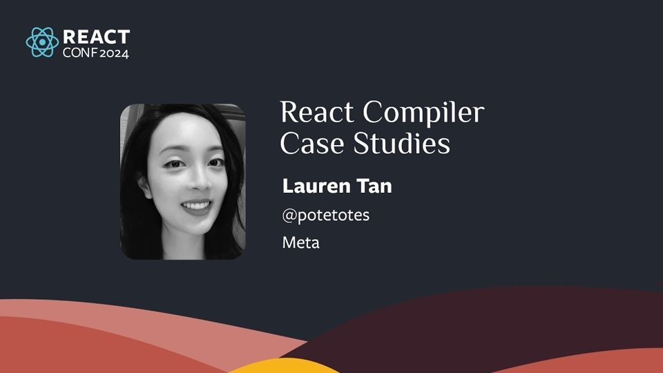

2024 · React Conf
手書きのメモ化を忘れよう
Forget About Memo

見どころと解説
Lauren が当時まだ実験段階にあった React Compiler を Bluesky クライアントに組み込み、操作がコンポーネントツリーにどう伝わるかを追う。プラグインを有効にしたあと、何が最適化されたかを確かめ、新機能を加えた際に予期せず再レンダーされた原因を調べる。どの計算が再利用され、どんなコードでは安全に最適化できないのかを、動くアプリの中で観察できる。翌年の 1.0 発表と併せて見ると、診断機能や段階的な導入が重視された背景も分かる。